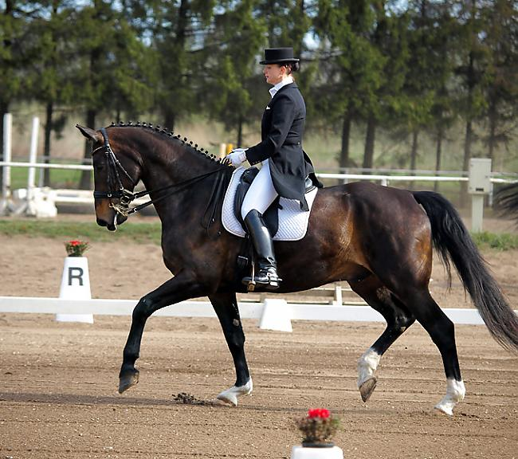
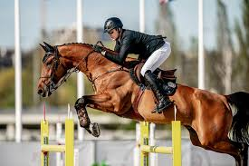

| iejādē | konkūra |
|---|---|
| Iejāde tiek uzskatīta par estētiskāko jāšanas sporta un zirgu apmācības
izpausmi, tiek izmantota kā pamats citu disciplīnu attīstīšanai.
Zirgam un jātniekam ir jāveic noteiktu, obligātu kustību kopums ierobežotā, taisnstūra laukumā. |
Mūsdienās konkūra sacensībās zirgs ar jātnieku veica maršrutu, kas sastāv vidēji no 10-13 šķēršļiem; mērķis ir pārbaudīt pāra
prasmes, precizitāti un iemaņas. Maršruts ir jāizlec pēc noteiktās kārtības – visi šķēršļi ir numurēti, neveicot kļūdas, t.i., nenogāžot šķēršļus. Ja kāda šķēršļa sastāvdaļa tiek nogāzta vai ja zirgs atsakās lekt, tiek skaitīti soda punkti. |
 